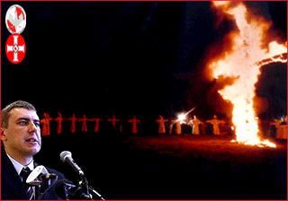

| |
LIGA
POLSKICH RODZIN - MY Z NIMI!
 |
LIGA
POLSKICH RODZIN jest parti¹ któr¹ popieramy, jest
przepiêkn¹ inicjatyw¹, szlachetnego Polaka Romana
Giertycha.
|
Ÿród³o:www.radiomaryja.cba.pl |

Roman
Giertych za³o¿y³ LIGÊ, bo chce tak jak my wlaczyæ z zepsuciem
otaczaj¹cego nas œwiata, Pan Roman Giertych walczy o woln¹
Polskê i my jako œwiadoma swoich praw m³odzie¿ chcemy
mu pomóc. Walczymy z zepsuciem spo³ecznym i aborcj¹ oraz
wszechobecnymi agentami, Nasza Ojczyzna musi siê wreszcie
oczyœciæ z ludzi którzy chc¹ zabijaæ dzieci nienarodzone,
niegodziwców, szaleñców i ob³¹kañców, którzy bezczeszcz¹
imiê NASZEGO OJCA ŒWIÊTEGO JANA PAW£A II WIELKIEGO i atakuj¹
RADIO MARYJA. Ludzie Ci wykazuj¹ siê wybitn¹ nieodpowiedzialnoœci¹
za nasz kraj. W tym miejscu chcemy tak¿e powierzyæ Panu
Bogu Romana Giertycha oraz ca³¹ jego ciê¿k¹ codzienn¹
pracê na rzecz obrony rodziny przed homoseksualizmem,
pedofili¹ i innymi ohydztwami zachodu. Nale¿y tak¿e napieraæ
na pos³ów do parlamentu europejskiego z ramienia LPR aby
prowadzili polityke braku akceptacji dla Unii Europejskiej.
Poka¿my, pos³om, ¿e polski naród chce wyzwolenia spod
jarzma zachodniego, powiedzmy doϾ degradacji naszego
rolnictwa, przemys³u, transportu. WyraŸnie widzimy przecie¿
odgórn¹ próbê demonta¿u naszego kraju, przez zachodnie
elity, oni widz¹, ¿e nasz kraj jest bogaty i staraj¹ siê
wyrwaæ jak najwiêcej dla siebie. Broñmy Polski i Polskoœci
to nasz obowi¹zek!!!
Dla
nas najwa¿niejsza jest Polska, chcemy broniæ Polskoœci,
miejsc pracy dla Polaków, chcemy walczyæ z zagranicznym
kapita³em, róznymi metodami, jeœli tego nie zrobimy, zachodni
kapita³ wch³onie nas jak jamoch³on. Z Polski kraju prê¿nego
rolnictwa i naturalnej nieska¿onej przyrody, uczyni¹ kraj
rozbuchanej konsumpcji. Obrona Ojczyzny jest obowi¹zkiem
ka¿dego prawdziwego Polaka, nale¿y wzi¹æ sobie do serca
przes³anie Totus Tuus NASZEGO OJCA ŒWIÊTEGO JANA PAW£A
II WIELKIEGO i w pe³nym oddaniu OJCU ŒWIÊTEMU I MARYI
walczyæ o niepodleg³oœæ naszego kraju. Nie mo¿emy siedzieæ
bezczynnie, musimy, kieruj¹c siê dewiz¹ OJCA DYREKTORA
TADEUSZA RYDZYKA "Infromacja, Formacja, Akcja", niez³omnie
dzia³aæ, solidarnie wspó³pracowaæ i uczciwie pracowaæ
dla dobra naszej Ojczyzny.
Niech
bêd¹ pochwaleni Ojcowie Toruñscy i Ich Najœwiêtsza Rozg³oœnia!
|